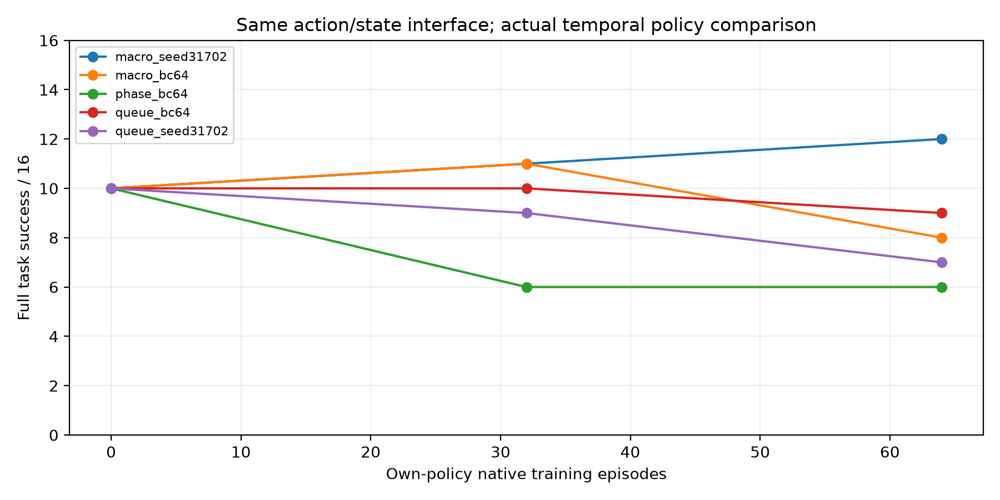
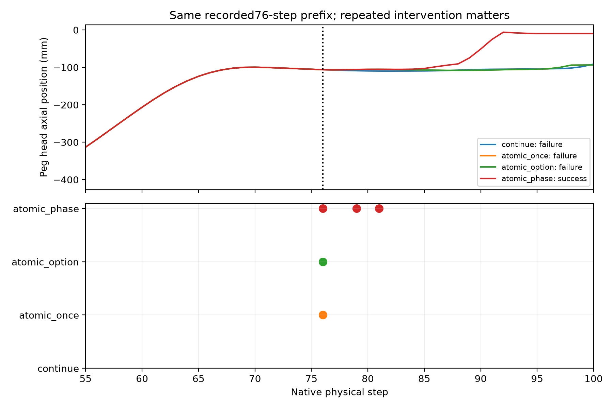

Native PhysX · Peg100 / Charger200 · 2026-11-05 · no hardware / no sealed test
真实救回成立，稳定净性能优势未成立。新24条件：名义12，冻结规则15，候选10/12。保留全部负结果。
完整结论与成本 · 近邻区别 · 逐例配对 · 原始包SHA

每臂64回合自身策略采集；共同强执行器和动作字典，时间策略类别不同。0/32/64完整开发评价，未隐藏后期退化。
| Method | Success | Rescue | Regression |
|---|---|---|---|
| confirm_queue_bc64 | 12/24 | 0 | 0 |
| confirm_macro_bc64 | 10/24 | 1 | 3 |
| confirm_queue_seed31702 | 12/24 | 0 | 0 |
| confirm_macro_seed31702 | 12/24 | 1 | 1 |
| confirm_rule | 15/24 | 4 | 1 |
| nominal | 12/24 | 0 | 0 |
同一预登记选模规则。队列基线选择训练前模型，但仍计全部64回合成本。非封存测试。
762214：名义失败；冻结策略第58步修正成功；移除该次修正失败。
完整RAW · 逐帧可点击同步曲线 · 761202开发机理对照
视频由真实记录的关节/物体状态逐帧渲染，非新物理采样或实机。模型回读误差在视频MANIFEST披露。

760213：同76步前缀；单次atomic失败，重复阶段刷新成功；首次接触87 vs98步。标准Option机制，不冒称新算法。
保留83维执行观测、12动作、参数化闭环Option、独立NN初始化、真实前驱抓持和全部模型。下一步针对必要干预的估值与能力保持；当前无稳定跨阶段协同或第二任务学习迁移证据。